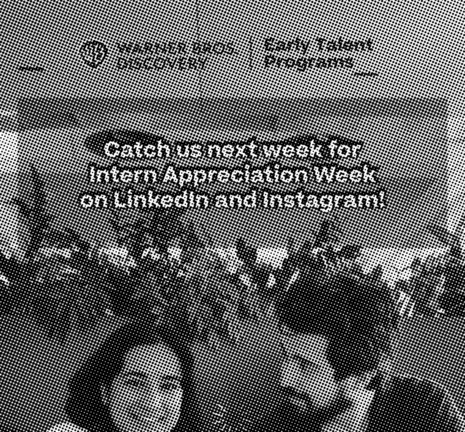

Intern Joins HBO Max to Shape Its First AI-Native Way of Finding Something to Watch
A summer on the content-discovery team in New York, and a lesson in designing for the long game.
By the Dispatch Staff

NEW YORK — From changing the way she streams to the way she designs: that is how Pranavi Ram described a summer spent as a product design intern on the HBO Max team at Warner Bros. Discovery, where she worked alongside designers and researchers on the company’s first-generation AI-native feature for content discovery.
“Nothing short of a transformative experience,” she said. The work, she explained, was less about pixels than about strategy — “thinking not only about visuals and interactions, but about how design decisions align with user needs and long-term product vision.”
Colleagues described a team that made work feel, in her words, like a playground, “where I get to tinker with code and AI all day.”
She reserved particular thanks for her manager, Hakha Mashayekhi, “amazing and thoughtful,” and for her recruiter, Shelly Punter, “who saw my potential and championed my growth.” Also acknowledged: all the wonderful friends made along the way, pictured above, one of whom is holding the frame.
Appreciation Week: Intern and Manager Take the Hot Seat

For Intern Appreciation Day, the company gave each intern–manager pair a set of surprise question cards and a camera. The resulting interview, posted by the company, finds Ms. Ram and Mr. Mashayekhi taking a break to talk about the catalogue and “everything in between.”
“Find out what HBO Max character I think he’s most like,” she wrote, declining to spoil it.
What’s Next
Earlier in the year she announced the move: a summer in New York designing new generative-AI features for the Max streaming app, “working with other talented individuals that love movies as much as I do.” A huge milestone, she called it. Correct.